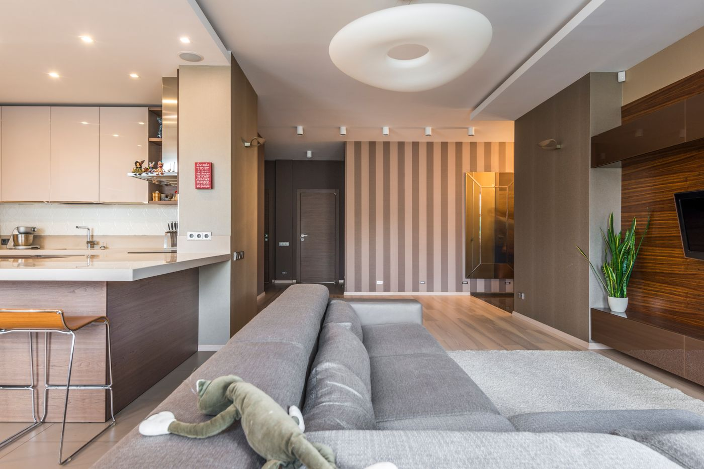

Quick answer: Custom home builders in Mona Vale design and construct homes to your specific brief — not a plan set from a catalogue shared with hundreds of other clients. Construction costs for a well-specified custom home start at $3,200–$4,500 per m² in 2026. A typical Mona Vale knockdown-rebuild comes in at $2.5M–$4M all-in once land, design, and construction are on the ledger. The suburb falls entirely within Northern Beaches Council — one planning authority, which simplifies things, though not as much as it sounds.
“Custom” in the building industry has become a bit like “artisanal” at the supermarket — it means roughly whatever the person selling it wants it to mean.
[Right. Straight face now.] Here is what it should mean, what it costs in Mona Vale in 2026, and what most guides on this topic don’t cover: the full set of coastal constraints that apply specifically to the Northern Beaches Peninsula, and why the Mona Vale land premium makes the “just use a project builder” argument harder to sustain than it might look on a cost-per-m² spreadsheet.
- What a custom home builder actually does in Mona Vale
- Why the Mona Vale land premium changes the calculus
- The coastal constraint checklist
- Northern Beaches Council — planning controls and approval paths
- What a custom build costs in Mona Vale
- Knockdown rebuild vs renovation
- What the timeline actually looks like
- When not to hire a custom builder
- Five questions to ask before you sign
- FAQ
What a Custom Home Builder Actually Does in Mona Vale
A genuine custom home builder manages the complete process from design through to handover. That means engaging a licensed architect or building designer, coordinating structural engineers, energy consultants, and surveyors, managing the council approval pathway, and delivering construction under a properly formed HIA or MBA contract. You get a home designed for your specific block — its orientation, dimensions, views, site constraints, and your brief — not a plan retrieved from a folder and adjusted at the margins.
The distinction matters because “custom” covers a wide range in this industry. Volume and project builders work from pre-approved plan sets that can be modified within limits: a different façade, an extended living area, a relocated bathroom. These modifications are constrained by the plan’s original design logic, which was optimised for cost and speed across hundreds of builds, not for your specific block.
For a Mona Vale block with a view of the Lagoon, a north-facing rear garden, a 1.5m fall from front to back, a coastal hazard management area designation, or an easement through the middle of it, the volume builder’s plan set either won’t work at all or will produce a result that uses perhaps half of what the site offers.
The alternative is a home designed from the site outward — the view corridor, the orientation, the coastal breezes, the access constraints, all resolved in the design before a slab is poured. That is what the word should mean, and largely does at the reputable end of the market.
Why the Mona Vale Land Premium Changes the Calculus
Mona Vale land doesn’t cost $1.5M–$3M because of its proximity to Parramatta. It costs that because of the Pacific Ocean, the Lagoon, Ku-ring-gai Chase National Park at the northern boundary, the Peninsula’s particular residential character, the B-Line bus connection to the CBD, the school catchment, and the quality of light that arrives on a north-facing Mona Vale block on a Tuesday morning in June.
The problem with buying at that price level and then constructing from a project home catalogue is straightforward arithmetic. If $400,000 of your land value reflects ocean proximity, $200,000 reflects Northern Beaches school catchment, and $300,000 reflects Peninsula prestige — your project home, which is not oriented to capture the view corridor, doesn’t respond to the coastal breezes, and shares its façade language with builds across western Sydney — doesn’t collect most of what you paid for.
A custom home on a well-located Mona Vale block responds to the site’s specific characteristics. Living areas face the right direction. The roof line doesn’t obstruct the view. Glazing is sized and positioned to manage passive solar heat gain for this block’s orientation, not a generic assumption baked into a catalogue designed for hundreds of different sites. The coastal breezes that cross that particular block on a summer afternoon are considered in the design, not discovered after handover.
This is not an argument that custom builds are always the right choice — the section on when not to hire a custom builder addresses that directly. It is an argument that if you are spending $1.5M–$3M on a Mona Vale block specifically because of what the site offers, a home designed to ignore all of those characteristics is a straightforward waste of the premium you paid.
The Coastal Constraint Checklist

Photo via Pexels
This is the section most guides on Mona Vale building skip. Northern Beaches properties carry a set of additional requirements that don’t apply to the same build type in Parramatta or the Hills District. Worth knowing before you brief anyone.
Coastal Hazard Management Areas
Northern Beaches DCP Chapter B4 maps coastal management areas across the LGA. Lots near Mona Vale Beach, the Narrabeen Lagoon system, or the foreshore may fall within mapped inundation or wave runup zones. Where they do, the DCP sets minimum habitable floor levels — which directly affects decisions about ground floor use, garage placement, and whether a single or double storey design is the right response for the site. A building designer or certifier can assess your lot’s coastal hazard status before design commences.
Flood Planning Levels
Mona Vale Creek and the Narrabeen Lagoon catchment create flood overlay areas that sit outside the coastal hazard mapping but still carry planning requirements. Flood planning levels set minimum floor heights. These are separate from — and additional to — the coastal hazard requirements above. Confirm both on the NSW Planning Portal before committing to a design direction.
BASIX Requirements
BASIX (Building Sustainability Index) applies to all new NSW residential construction, setting minimum thermal performance, water efficiency, and energy targets by certificate. Coastal sites in Mona Vale frequently require stronger thermal performance responses than comparable inland sites — because of their aspect, the glazing demands of ocean-facing rooms, and NSW’s coastal thermal comfort zone requirements. The practical implication is better insulation specifications, more carefully considered glazing systems, and sometimes active heating and cooling arrangements that a cost-minimised project build wouldn’t include. Budget $8,000–$25,000 for the BASIX design response, depending on the glazing ambition.
Sea Spray and Salt Air
Within roughly 1km of the ocean, building materials behave differently over time. Structural steel fixings require stainless grade specifications. Aluminium window and door systems need coastal-rated hardware. Exposed timber species must be appropriate for the salt air environment. These specifications are standard practice for any competent builder working regularly on the Northern Beaches — but they add cost and should be priced in from the start, not discovered during construction when the standard-spec hardware has already been ordered.
Bushfire Overlay
Some Mona Vale lots — particularly those adjacent to Ku-ring-gai Chase National Park or other bush reserve boundaries at the suburb’s northern and western edges — carry a Bushfire Attack Level (BAL) designation. BAL ratings affect permitted cladding materials, window specifications, and subfloor construction. Check your lot’s BAL on the NSW Rural Fire Service website before committing to a design direction — not after the facade cladding has been specified.
Northern Beaches Council — Planning Controls and Approval Paths

Photo via Pexels
Unlike Carlingford — which spans three council boundaries with different planning rules on different streets — Mona Vale sits entirely within Northern Beaches Council. One LEP, one DCP, one set of development standards. That simplifies things compared to a suburb with a three-council split, though it doesn’t make the planning process simple.
Northern Beaches Council was formed in 2016 through the amalgamation of Pittwater, Warringah, and Manly councils. The Northern Beaches Local Environmental Plan 2021 (NBLEP 2021) replaced the three predecessor LEPs and standardised development controls across the LGA. For residential construction in Mona Vale, the two relevant zonings are R2 Low Density Residential (the majority of the suburb’s residential land) and R3 Medium Density Residential (along Pittwater Road and near the town centre).
Complying Development (CDC)
If your proposed design meets all the numerical standards in the Housing SEPP — setbacks, height, floor space ratio, site coverage — a Complying Development Certificate can be issued by a private certifier in approximately 20 business days. Not all Mona Vale sites qualify. Lots within heritage conservation areas, flood planning overlays, coastal management areas, or with BAL designations may be excluded from the CDC pathway even if the numerical standards are otherwise satisfied. An architect or certifier can assess CDC eligibility before the design commences.
Development Application (DA)
Required where the site or design doesn’t meet CDC criteria — irregular lots, corner allotments, lots within environmental overlays, or designs that seek variation from the planning controls. Northern Beaches Council typically processes standard residential DAs in 4–8 months. Applications in environmentally sensitive areas or involving variations to development standards may take longer. Factor this into your project programme before setting a construction start expectation.
For a Mona Vale knockdown-rebuild, the DA vs CDC question is worth resolving early. A well-designed home on a standard lot may qualify for CDC and compress the approval phase to weeks rather than months. A site with any of the coastal overlays mentioned above will almost certainly require a DA.
See our guide to custom home builders on the North Shore for a comparison of how Northern Beaches and North Shore council planning approaches differ for residential builds.
What a Custom Build Costs in Mona Vale

Photo via Pexels
Construction costs for a mid-to-high specification custom home in Mona Vale in 2026:
| Specification | Cost per m² (construction only) |
|---|---|
| Standard mid-spec | $2,800–$3,500 |
| Well-specified custom | $3,200–$4,500 |
| Architectural / high-spec | $4,500–$6,500+ |
A 250m² home at mid-to-high specification runs $800,000–$1.13M in construction costs before anything else is on the ledger.
What gets added on a Mona Vale knockdown-rebuild:
- Demolition and site clearing: $20,000–$50,000
- Asbestos removal (1960s–1970s fibro homes): $15,000–$40,000
- Rock excavation if Hawkesbury Sandstone is encountered: $40,000–$150,000+
- Architect or building designer fees: $60,000–$120,000+
- Structural engineering, energy assessments, surveys: $15,000–$25,000
- Northern Beaches Council contributions: $20,000–$60,000
- BASIX and coastal compliance upgrades: $8,000–$25,000
- Landscaping, pool, fencing: $60,000–$150,000+
- Furnishings and the styling consultation you’ll be talked into
On a well-located 550–700m² Mona Vale block, expect $2.5M–$4M all-in including land. That figure surprises people who started with a construction cost-per-m² estimate. It should not surprise you.
For context on how Northern Beaches costs compare to premium inner-suburban builds, see our guide to custom architectural home builders in Sydney’s Eastern Suburbs.
Knockdown Rebuild vs Renovation in Mona Vale
The majority of Mona Vale’s residential stock dates from the 1960s through the 1980s — a mix of fibrous cement cottages, brick veneer, and California bungalows on generous blocks. Much of the 1960s–1970s stock contains asbestos-containing materials in eaves, wet areas, and rooflines.
When knockdown rebuild makes more sense:
The existing home has fibrous cement cladding or other asbestos-containing materials. Removal and safe disposal is disruptive and expensive ($15,000–$40,000), and typically reveals additional defects once the structure is opened up.
The floor plan is oriented away from the view, the aspect, or the prevailing coastal breeze. A home from the 1970s was not designed with passive solar principles or Northern Beaches microclimate in mind. Renovating a fundamentally wrong orientation is expensive and usually produces a compromised result — you’ll spend significant money and still not have the home the site is capable of supporting.
The brief involves structural changes: moving load-bearing walls, relocating wet areas, raising ceiling heights. These works approach knockdown costs without the result of a purpose-designed new home.
When renovation makes more sense:
The existing structure is sound, asbestos-free, and oriented to capture the site’s natural light and breezes. The brief is confined to extensions, additions, or internal fit-out improvements. A well-executed rear extension or second storey addition on a solid Mona Vale home can be completed for $250,000–$500,000 — significantly less than a full rebuild, and the right answer when the original structure is worth keeping.
What the Timeline Actually Looks Like
| Phase | Duration |
|---|---|
| Site assessment, town planning, feasibility | 4–8 weeks |
| Design and documentation | 3–5 months |
| CDC approval (if eligible) | ~20 business days |
| DA assessment (Northern Beaches Council) | 4–8 months |
| Construction — single storey | 10–14 months |
| Construction — double storey | 12–16 months |
For a Mona Vale knockdown-rebuild taking the CDC path, total elapsed time from first conversation with a builder to handover is typically 18–24 months. Via the DA path, allow 22–28 months. These numbers assume no material objections to the application, no significant design variations during construction, and no supply chain delays. Each of those is a real possibility rather than an edge case. The DA phase is where timelines go to become suggestions.
When Not to Hire a Custom Builder
This is the section most builder websites skip. We are not most builder websites.
Do not engage a custom builder if your brief is a standard four-bedroom, two-bathroom home with an open-plan kitchen-living area, a double garage, and unremarkable finishes. A volume builder will deliver this faster, with a clearer price, and with less ambiguity at every stage of the process. A Mona Vale address does not change that calculus if the brief itself is generic.
Do not engage a custom builder if your construction budget is under $700,000. Below this threshold, the margins required to run a genuine custom process — dedicated project management, consultant coordination, bespoke procurement — compress to a point where something concedes. Usually quality, or the relationship, or the timeline, or some combination of all three.
Do not engage a custom builder if you need a fixed, non-negotiable price on day one and have no tolerance for scope evolution. Custom builds are iterative by nature. The design moves as the brief clarifies. Costs move with it. If that iterative process is genuinely unworkable for your situation, the project home route is the more honest answer about what you are buying.
Do not engage a custom builder for a brief that is fundamentally a renovation or extension. If the existing structure is sound, asbestos-free, and reasonably oriented, a specialist renovation builder will deliver a better outcome at lower cost than a custom builder whose business is structured around new construction from the ground up.
Five Questions to Ask Before You Sign
Do this before the first phone call, not after three good meetings and emotional attachment to the renders.
- Are you licensed for residential construction in NSW? Verify the licence on the NSW Fair Trading register — not just the number the builder gives you, but the current status and contracting entity. The licence should be current and in the company’s name.
- Do you have experience building to coastal specifications on the Northern Beaches? BASIX coastal compliance, coastal hazard DCP requirements, coastal-rated material specifications, and bushfire overlays are standard on the Northern Beaches but unfamiliar to builders who primarily work inland. Ask for examples of comparable completed projects on coastal sites.
- Who manages this project day to day? A dedicated site supervisor on your project, or a supervisor rotating across multiple concurrent sites? The answer materially affects communication, quality control, and your experience during an 18–26 month build.
- Can I speak with three recent clients whose builds were comparable in scope and coastal constraints? The right builder says yes immediately. Any hesitation tells you something. A builder who won’t provide references is, in a way, also providing a reference.
- How do you handle variations? Every custom build generates them. Ask for the variation clause from the proposed contract before you commit. Variations should be priced in writing before the work proceeds — not reconciled at practical completion when you are no longer in a position to push back.
FAQ
How much does a custom home cost in Mona Vale?
A well-specified custom home in Mona Vale costs $3,200–$4,500 per m² for construction in 2026. A 250m² home runs $800,000–$1.13M in build costs before demolition, design fees, council contributions, and landscaping. On a typical Mona Vale knockdown-rebuild, allow $2.5M–$4M all-in — land in this postcode starts at $1.5M and rises steeply for ocean proximity and Lagoon-facing aspects.
Which council covers Mona Vale NSW?
Mona Vale falls entirely within Northern Beaches Council, formed in 2016 through the amalgamation of Pittwater, Warringah, and Manly councils. The Northern Beaches Local Environmental Plan 2021 governs the suburb. Confirm your site’s zoning and all planning overlays on the NSW Planning Portal before briefing a designer — the coastal, flood, and bushfire overlays discussed above don’t appear on basic zoning maps.
How long does a DA take with Northern Beaches Council?
Northern Beaches Council typically processes standard residential development applications in 4–8 months. A Complying Development Certificate (CDC) assessed by a private certifier can be approved in approximately 20 business days if the proposed design meets all Housing SEPP numerical standards. Sites with coastal management area designations, flood overlays, heritage conservation area status, or BAL ratings may not qualify for the CDC pathway even if the design otherwise complies.
What coastal building constraints apply in Mona Vale?
Mona Vale lots near the beach, Narrabeen Lagoon, or coastal foreshore may fall within coastal hazard management areas under Northern Beaches DCP Chapter B4, which sets minimum habitable floor levels. Flood planning levels from the Mona Vale Creek catchment apply separately. BASIX requirements for coastal sites typically demand stronger thermal performance than inland equivalents. Sea spray within roughly 1km of the ocean requires stainless steel fixings, coastal-rated glazing hardware, and appropriate timber specifications. Some lots adjacent to national park carry Bushfire Attack Level overlays. See our guide to custom home builders in Carlingford for a comparison of inland vs coastal planning constraints in the Sydney basin.
Is a knockdown rebuild worth it in Mona Vale?
On most Mona Vale blocks where the existing home is a 1960s or 1970s fibro or brick veneer, a knockdown rebuild typically delivers a better outcome than renovating. Fibrous cement sheeting of this era often contains asbestos — safe removal and disposal adds $15,000–$40,000 to any renovation scope and disrupts the build sequence. Original homes of this era were also not designed to respond to the specific site characteristics — orientation, views, coastal breezes — that drive Mona Vale’s land values. That is a fixable problem in a knockdown rebuild. It is expensive and usually incomplete in a renovation.
What is BASIX and how does it affect a Mona Vale build?
BASIX (Building Sustainability Index) is a NSW requirement for all new residential construction, setting minimum thermal performance, water efficiency, and energy generation targets by certificate. Coastal sites in Mona Vale frequently require higher insulation levels and more sophisticated glazing specifications than comparable inland sites — because of their coastal aspect and the glazing demands of ocean or Lagoon-facing rooms. The cost impact on a well-designed Mona Vale custom home is typically $8,000–$25,000 depending on the glazing scope. Your architect or building designer handles BASIX compliance as part of the standard documentation package.